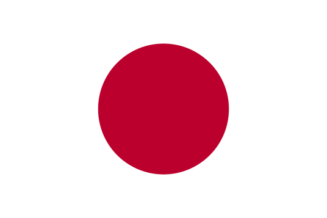

日本国（Japan），简称日本，首都东京，位于太平洋西岸，是一个由东北向西南延伸的弧形岛国， 包括北海道、本州、四国、九州四个大岛和其它6800多个小岛屿，总面积37.8万平方千米， 由1都、1道、2府和43县（省） 组成。
截至2022年5月，日本总人口约1亿2505万人，主要民族为大和族，北海道地区约有1.6万阿伊努族人。通用日语。主要宗教为神道教和佛教。 [69] 3世纪中叶，其境内出现大和国。645年，日本向中国唐朝学习，进行大化改新。
世纪后期，天皇皇权旁落，进入幕府统治时代。19世纪50年代中期，黑船事件迫使日本放弃“锁国政策”，签订一系列不平等条约。1868年，明治天皇重新掌权，实行明治维新，建立大日本帝国， 迅速跻身帝国主义列强行列，对外走上侵略扩张的军国主义道路。1945年8月15日，日本在二战中战败并宣布无条件投降。战后初期，美军单独占领日本。1947年，颁布实施新宪法， 由天皇制国家变为以天皇为国家象征的议会内阁制国家。战后奉行“重经济、轻军备”路线，20世纪60年代末成为西方第二经济大国。 [69]
日本是高度发达的现代化国家，是世界第三大经济体，汽车、钢铁、机床、造船、电子和机器人等产业在世界上的竞争优势相对明显。 日本电力、电信基础设施相对完善，高速公路、铁路、航空、海运等交通设施便利，市场规模较大，法律法规和信用体系健全。2021年国内生产总值约541.9万亿日元，实际增长率为1.6%，外汇储备达1.39万亿美元。
